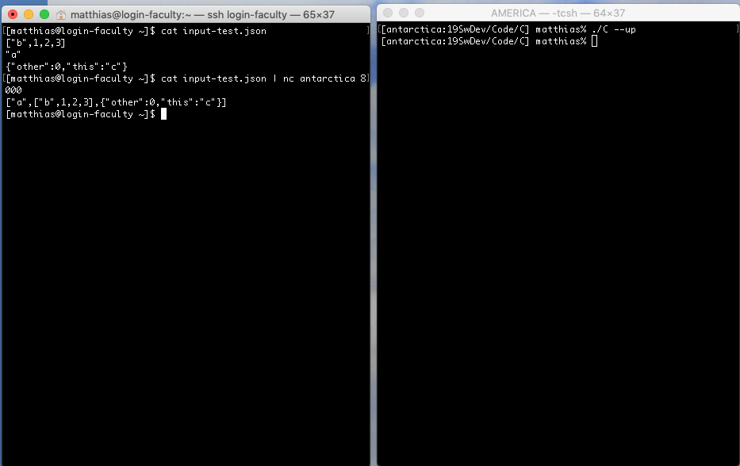

Software Development

I expect students to visit this page once per 24 hours starting with the first day of the semester.
 Monday, September 16th, 2019 9:40:23am
Monday, September 16th, 2019 9:40:23am
On Tuesday we will do some in-class software development. Please coordinate with your partner so that every pair has at least one laptop in class. Thanks.
Saturday, September 14th, 2019 12:20:32pm
I have modified C —
Friday, September 13th, 2019 6:00:42pm
Industrial people are slowly recognizing the downside of ticket-driven software development. Considering reading the Jon Evans’s blog post to get a sense of what these people are getting at.
Friday, September 13th, 2019 12:33:36pm
[login-faculty] $ cat test-input.json | nc login-faculty.ccs.neu.edu 45678 |

In the right shell window I start ./C –up, waiting to connect with a
single client. Then in the left window I first display the content of the
test file to the shell, before I use the command combination from above to
send it to the “server” in the right window. As soon as the server has
done its work for the client, it shuts down—
Thursday, September 5, 2019 10:44:25am
Please prepare a letter-size sheet of paper by folding it lengthwise, writing down the name of your favorite programming language on one side and placing it in front of you on your desk. ~~ You will get the chance to build a large code base in this language so that the instructor’s taste in PL won’t inhibit your amazing programming skills.

Even Congress Doesn’t Understand Why Software Engineers Take So Long